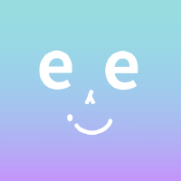
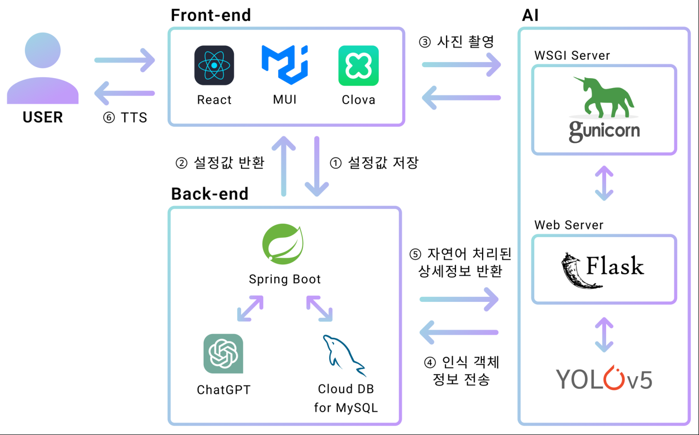
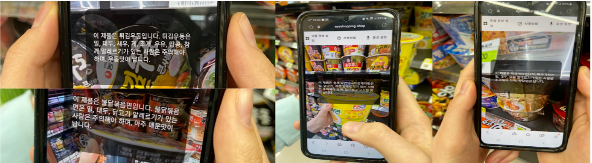
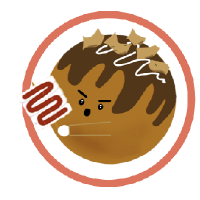
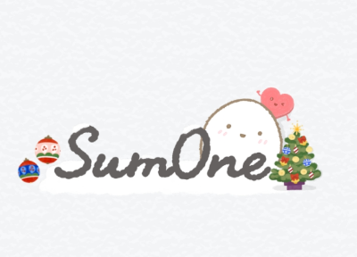

PORTFOLIO / 2026
Full-Stack Developer
심봉교.
비즈니스 가치를 구현하는 도메인 설계와 안정적인 시스템을 만듭니다. 백엔드 아키텍처부터 React 기반 화면까지 연결하고, AI를 개발 파이프라인으로 설계해 검증된 결과를 반복해서 만들어냅니다.
Java / SpringReact / TypeScriptRedisMSAAI Workflow
PROFILE02 / 06
일하는 방식
도메인을 이해하고, 측정으로 병목을 찾고, 테스트와 검수 기록으로 결과를 증명합니다.
40%WL 배치 처리 개선
50%데이터 처리 향상
99.9%변환 정확도 유지
20%문장 오류 감소
01
Domain First
업무 규칙을 계층화하고 핵심 도메인 로직을 분리해 변경에 강한 구조를 설계합니다.
02
Performance by Evidence
쿼리·인덱스·캐시·네트워크 설정을 측정하며 병목을 좁히고 성능을 개선합니다.
03
AI as a Pipeline
규칙 문서, 개발 AI, 검수 AI, 테스트, 완료보고서를 하나의 반복 가능한 흐름으로 묶습니다.
04
End-to-End Ownership
Spring 기반 서버부터 React 화면, 클라우드 배포와 운영 이슈까지 제품 전체를 연결합니다.
RULErule.md에 금융 도메인 규칙과 코딩 컨벤션을 고정해 AI 결과의 편차와 재작업을 줄입니다.
REVIEW작성 AI와 검수 AI를 분리하고, 발견 이슈·심각도·수정 여부를 검수보고서로 남깁니다.
TEST테스트 생성 → 실행 → 실패 분석 → 수정을 반복하며 통과한 변경만 완료 결과로 관리합니다.
LEARN반복되는 지적을 규칙 문서로 환류해 파이프라인이 돌수록 같은 실수를 줄입니다.
BACKENDJava · Spring Boot · Spring Framework · Python · Flask · Django · REST · GraphQL
FRONTENDReact · TypeScript · JavaScript · Redux Toolkit · JSP · Thymeleaf
DATA / INFRARedis · RDB · NCP · AWS · Docker · L4 Load Balancing · CI/CD
EXPERIENCE03 / 06
경력
운영 안정성, 데이터 정확도, 처리 성능을 함께 개선해 온 실무 경험입니다.
(주)이엘온소프트
2026.03 — PRESENT금융기술지원팀 · Full-Stack Developer
- AML 고객확인·위험평가·STR/CTR 및 FATCA/CRS 보고 로직과 화면 유지보수
- 국내외 제재·PEP 리스트 크롤러 추가, 파서 수정, 데이터 정제·중복 제거·변경분 반영 개선
- WL 유사도 매칭과 결과 관리 기능을 보완하고 쿼리·인덱스를 최적화해 대용량 배치 처리 속도 약 40% 향상
- 도메인 규칙 → 개발 → 독립 검수 → 테스트 → 보고서로 이어지는 AI 개발 파이프라인 구축
(주)파츠몰
2025.02 — 2026.03전산팀 · Web Full-Stack Developer
- Redis FIFO 대기열과 UUID 기반 토큰 수명주기를 설계해 대규모 접속의 순서와 무결성 보장
- 폴링 3Hz·진입 간격 10초 조정, somaxconn 128→1024 튜닝, WAS 2대·Redis 1대 구조로 부하 분산
- Spring·JSP·React 기반 부품 검색, 장바구니, B2B 견적·패키지 관리 화면 개발
- AI 도구로 레거시 JSP 분석과 리팩터링, 신규 페이지 반복 작업을 단축
(주)아이페이지온
2023.11 — 2024.12OSS 개발팀 · Backend Developer
- KT Message Gateway의 전체 초기화를 클러스터·컴포넌트·호스트 단위로 세분화
- 계층 데이터를 Redis에 캐싱해 반복 쿼리를 줄이고 Thymeleaf 관리자 화면으로 시각화
- MSA의 CLI 블록을 개발하고 Tree 데이터를 Parent–Child 관계로 정규화해 중복 제거와 무결성 확보
아이쇼핑 Startup Team
2023.01 — 2023.11Co-Founder · Backend Lead
- GPT 기반 문장 생성 파이프라인을 개선해 오류율 20% 감소, 가독성 30% 향상
- 2진–10진 데이터 변환 로직으로 처리 속도 50% 향상, 정확도 99.9% 유지
- 범정부 공공데이터 활용 창업경진대회 왕중왕전 국무총리상(대상)
FEATURED PROJECT / 0104 / 06
BACKEND LEAD · CONTRIBUTION 50%
Eye(I)Shopping
시각장애인이 오프라인 매장에서 상품을 인식하고 안내받을 수 있도록 만든 AI 기반 쇼핑 지원 서비스입니다.
Spring BootReactFlaskYOLOv5GPTNCP
2023.05 — 2023.11 · 5인 팀

문제와 접근
사용자가 사진과 설정 정보를 전달하면 상품·매대를 인식하고 자연스러운 안내 문장으로 변환하는 흐름을 설계했습니다. Spring API, Flask 모델 서버, React 클라이언트를 NCP 환경에 통합했습니다.
담당 영역
- Device ID 기반 인증과 접근 제어
- 사용자 설정 데이터의 비트 변환·저장
- GPT 문장 생성 및 프롬프트 개선
- 상품 분류, 위치·방향 계산 API
검증된 결과
- 문장 오류율 20% 감소
- 가독성 30% 향상
- 데이터 처리 속도 50% 향상
- 변환 정확도 99.9% 유지
Recognition
국민행복 서비스 발굴·창업 경진대회 보건복지부장관상(대상), 범정부 공공데이터 활용 창업경진대회 왕중왕전 국무총리상(대상).

01 · SYSTEM ARCHITECTURE

02 · PRODUCT RECOGNITION
SELECTED PROJECTS05 / 06
프로젝트
인증, 실시간 통신, 클라우드 배포와 사용자 경험을 제품 단위로 연결했습니다.

CONTRIBUTION 70% · 2023.11—2024.02
맛자취
소상공인의 온라인·오프라인 판매와 예약 운영을 돕는 서비스입니다.
Spring BootReactRedisNCP
- JWT Access/Refresh Token 인증과 Redis 로그아웃 블랙리스트 구현
- Socket.io 기반 예약 상태와 알림 실시간 전달
- GPS 좌표를 활용한 주변 가게·랜드마크 검색
- NCP 인프라 및 CI/CD 배포 흐름 구축

CONTRIBUTION 50% · 2024.09—
Bit-O
기념일 관리, D-day, 맞춤 데이트 장소 추천을 제공하는 커플 서비스입니다.
Spring BootReactGraphQLAWS
- REST와 GraphQL을 함께 제공하는 백엔드 API 설계
- 위치·선호도 기반 데이트 장소 추천
- Access/Refresh Token 교체를 통한 인증 강화
- AWS 기반 배포와 확장 가능한 인프라 구성
OPS
PRODUCTION SYSTEM
파트존 대기열
동시 접속 상황에서 서비스 진입 순서를 보장하고 서버 부하를 제어했습니다.
RedisSpringDockerL4
- FIFO 큐와 c_token / wait_token 수명주기 설계
- 비정상 종료 사용자 검출로 순번 정확성 유지
- 커널 backlog와 polling 간격 최적화
- 다중 WAS 및 Redis 구성으로 가용성 확보
AI
ENGINEERING WORKFLOW
검증형 AI 파이프라인
빠른 코드 생성보다 반복해서 신뢰할 수 있는 결과를 만드는 개발 흐름입니다.
Rule DocsReview AITestReports
- 금융 도메인 규칙과 코딩 컨벤션을 문서로 고정
- 개발 AI와 검수 AI를 분리해 독립 관점 확보
- 테스트 실패 원인 분석과 수정 반복 자동화
- 검수·완료보고서로 변경 범위와 잔여 리스크 기록
BACKGROUND & CONTACT06 / 06
BUILD · VERIFY · IMPROVE
제품 전체를 이해하고,
검증 가능한 개선을 만듭니다.
도메인 지식이 코드와 테스트, 운영 기록으로 남도록 설계합니다. 팀이 오래 다룰 수 있는 시스템과 개발 흐름을 만드는 개발자가 되겠습니다.
Education
한국HRD원격평생교육원 · 컴퓨터공학 학사 과정
인하공업전문대학 · 컴퓨터시스템과 전문학사
Training
네이버 클라우드 교육 수료
구로청년이룸 ‘코-취’ 우수 수료
원티드 프리온보딩 백엔드 인턴십
const contact = {
email: "simbonggyo@gmail.com",
github: "github.com/bong94688",
blog: "velog.io/@bong9468",
portfolio: "potofolio-kappa.vercel.app"
};